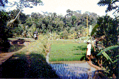
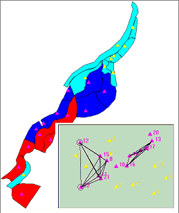

|
ORIZI
Importance du facteur social dans la gestion collective de l'eau : Cas du périmètre irrigué rizicole de Keji, Java Centre, IndonésieNicolas Becu (ENREF), Pascal Perez (CIRAD)  La gestion de l'eau en Indonésie devient de plus en plus problématique. En effet au niveau des périmètres amont des bassins versant, les institutions gouvernementales se retirent et les agriculteurs se retrouvent en quelque sorte livrés à eux même. Or au niveau des zones amont de ces bassins versants, certains agriculteurs se plaignent de ne pas avoir assez d'eau durant la saison sèche. Il nous a apparut important de tester l'importance du facteur social au niveau de zone à conflit car c'est dans ce genre de cas où il s'exprime le mieux. Le modèle Orizi se place tout à l'amont du BV là où le manque d'eau débute.
L'objectif du modèle est d'observer l'influence de différent type de comportement de gestion sur le débit en aval du périmètre et sur la viabilité du périmètre lui même. Structure d'OriziLa dynamique bio-physique du modèle consiste à chaque pas de temps à distribuer l'eau provenant de la rivière et des sources tout d'abord dans les canaux puis dans les parcelles. Les agents agissent sur l'ouverture ou la fermeture des parcelles et ce sont ces deux actions qui seront le lieu privilégié des interactions du système ; L'autre aspect de la dynamique biophysique est la croissance du riz et son evapotranspiration mais ces aspects ont été simplifiés au maximum car ils ne sont pas d'un intérêt primordial pour la question de départ.  Dans le modèle, un agent riziculteur est définit par quatre attributs principaux :
Chacun de ces attributs va guider ces choix et son comportement vis a vis de la gestion individuelle de sa parcelle et de ces interactions avec les autres riziculteurs. En jouant sur les caractéristiques de comportement de la population, le simulateur permet de tester différents scénarios et de mettre en avant leur importance dans un processus collectif.
Références
|